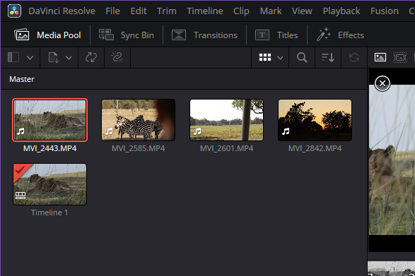
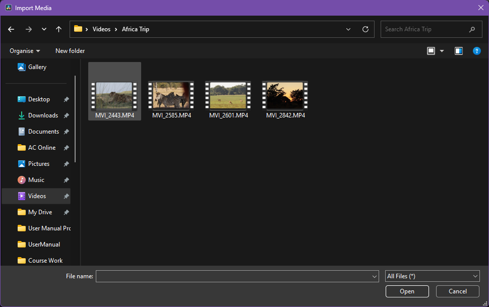

Import Media
Overview
Import media to add video and audio content to your DaVinci Resolve project. Use the Media Pool to view media imported to your project.

Procedure: Add media to the Media Pool
- Open the Import Media window by doing one of the following:
- Select File > Import > Media
- Select Ctrl + I on your keyboard
- Select Import Media in the Media Pool
- Select one or more files to import

- Select Open
Procedure: Create media pools
Use bins to sort media into categories or groups.
- Create a bin by doing one of the following:
- Select File > New Bin
- Select Ctrl + Shift + N on your keyboard
- Right click inside the Media Pool and select New Bin
- Enter a name for the bin
- Select Enter
Tips
Select the info icon (i) to see details about your media files, including resolution and duration.
Project: a container for your media, timelines, and editing work
Media: video, audio, or image files used in a project
Clip: a piece of a video or audio file used in a timeline